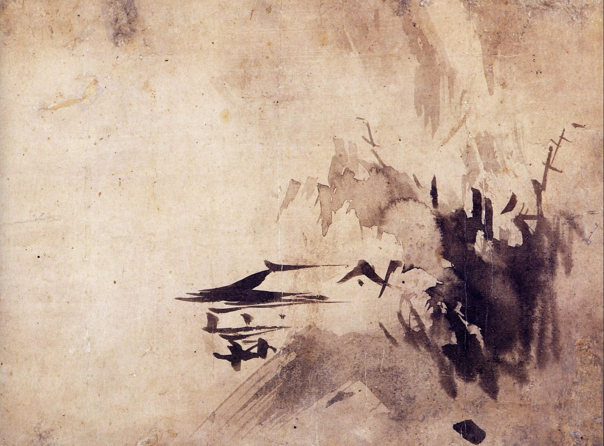
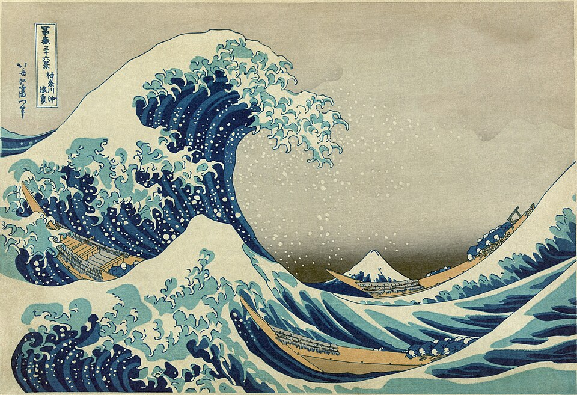
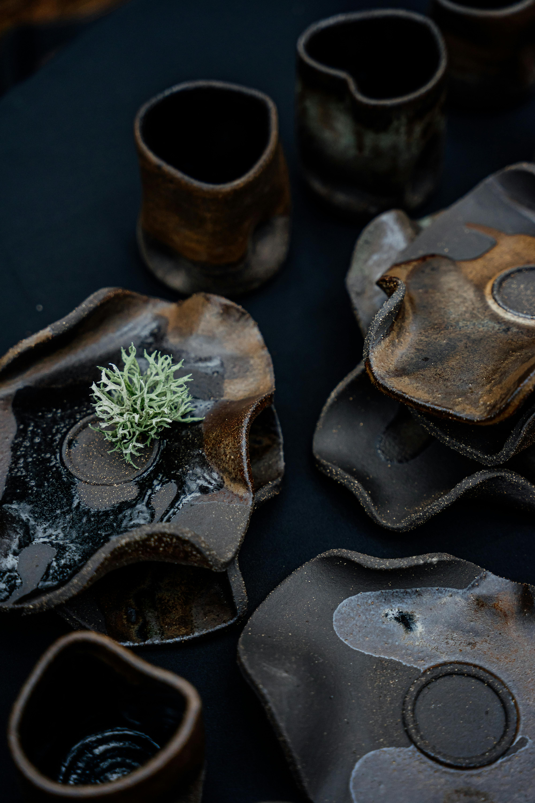
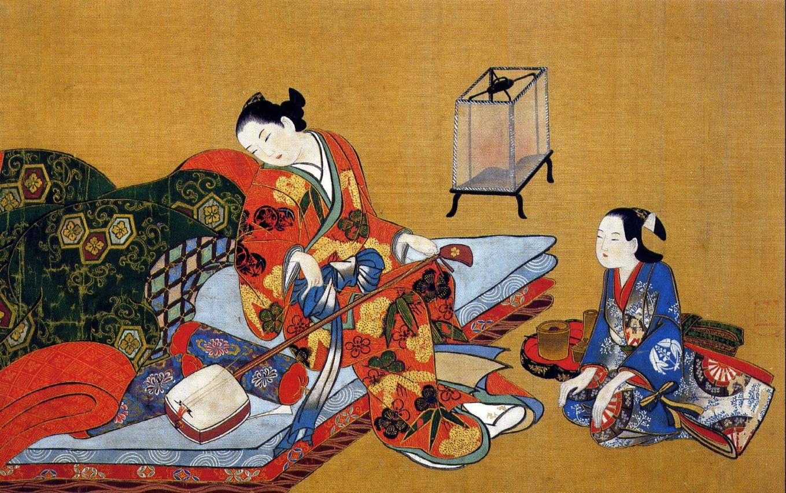
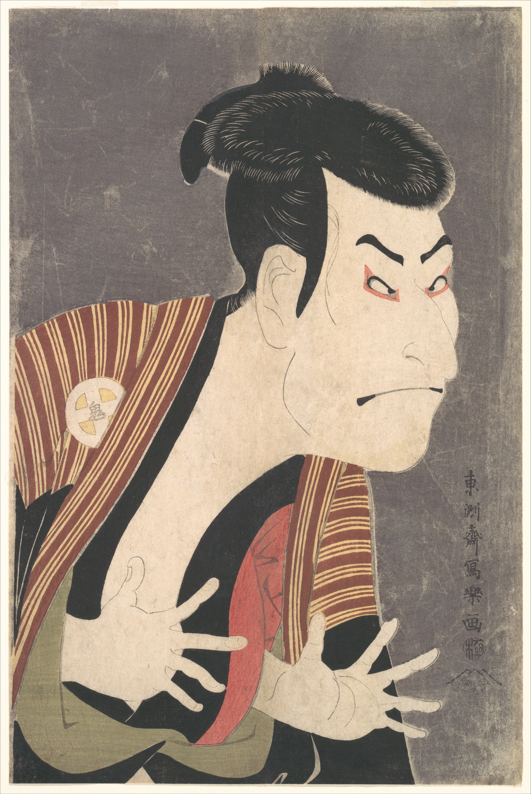
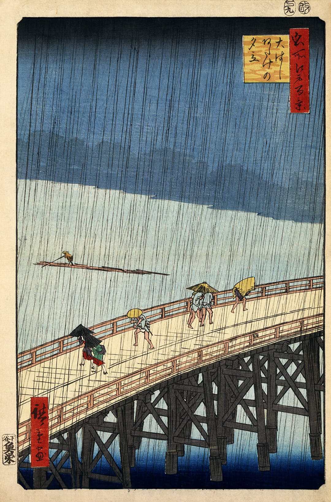
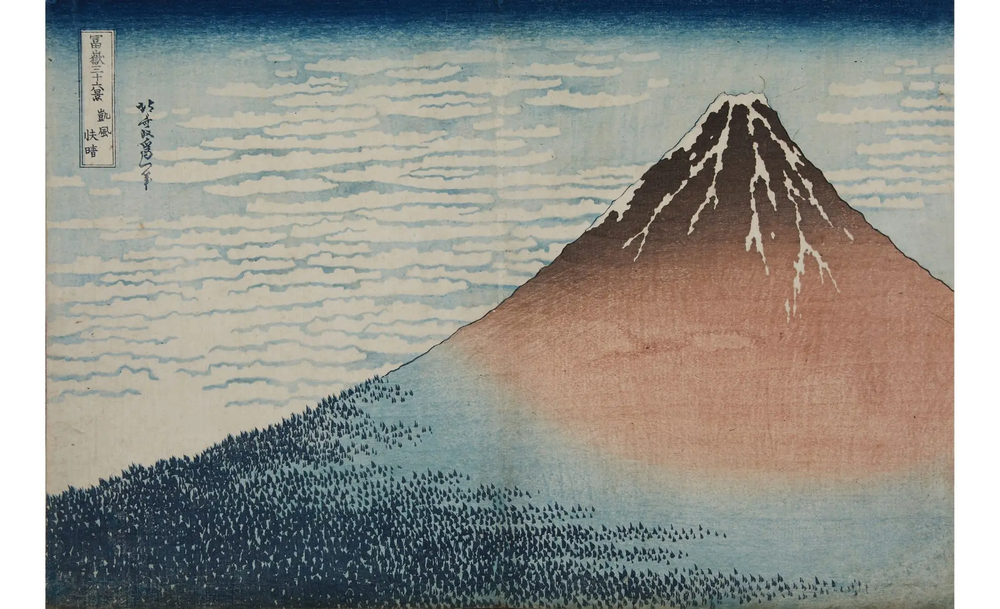
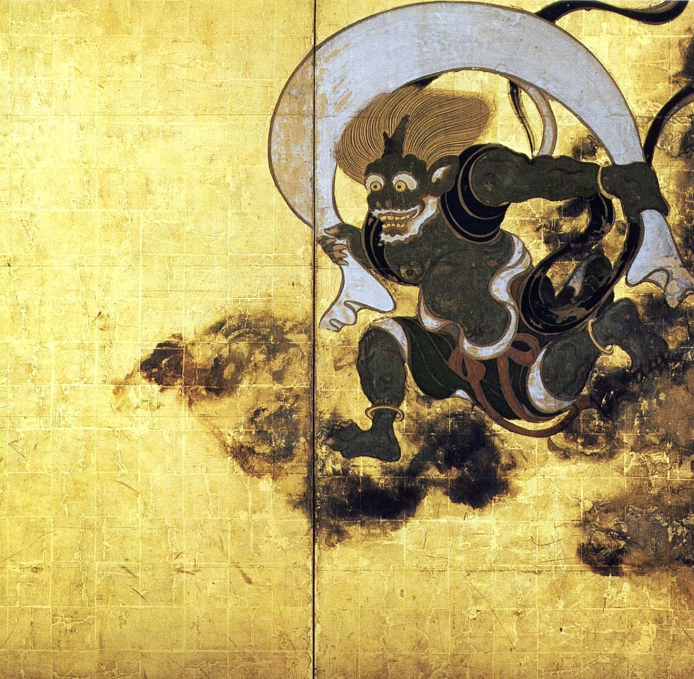

SUMI-E

Pintura monocromática con tinta china introducida por monjes budistas Zen...
Los temas más comunes son:
- seres vivos
- montañas
- flores
- aves
- paisajes naturales

El arte japonés es una fusión de historia, simbolismo y maestría artesanal. Desde antiguos pergaminos hasta creaciones contemporáneas, cada obra refleja una profunda conexión con la naturaleza, la espiritualidad y la vida cotidiana.
"JAPÓN TRANSFORMA LO COTIDIANO EN ARTE."

Pintura monocromática con tinta china introducida por monjes budistas Zen...
Los temas más comunes son:

El wabi-sabi es una filosofía estética japonesa...

El ukiyo-e fue un estilo de grabado y pintura japonesa...

Toshūsai Sharaku

Utagawa Hiroshige

Katsushika Hokusai

Tawaraya Sōtatsu
美術 se usa para referirse al arte visual...